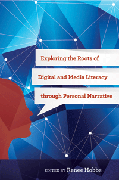

<html lang='en'><head>
<meta name='robots' content='noindex,nofollow' /><meta content="text/html; charset=utf-8"></meta><script> (function(i,s,o,g,r,a,m){i['GoogleAnalyticsObject']=r;i[r]=i[r]||function(){  (i[r].q=i[r].q||[]).push(arguments)},i[r].l=1*new Date();a=s.createElement(o),  m=s.getElementsByTagName(o)[0];a.async=1;a.src=g;m.parentNode.insertBefore(a,m)   })(window,document,'script','//www.google-analytics.com/analytics.js','ga');   ga('create', 'UA-43183130-1', 'temple.edu');   ga('send', 'pageview'); </script><title>Edited by Renee Hobbs: Exploring the Roots of Digital and Media Literacy through Personal Narrative - Print</TITLE><link rel="stylesheet" href="general.css" type="text/css"><SCRIPT LANGUAGE = JAVASCRIPT></SCRIPT></HEAD><BODY LINK="#3152A5" VLINK="#3152A5" ALINK=Gray BGCOLOR=White><CENTER><P CLASS=intro><br>Leading scholars reveal insights into the core concepts and historical roots of digital and media literacy education<br><br></P></CENTER><br>&nbsp;<!--none//--><Table width="100%" border=0 cellspacing=5><tr><td width="175" align="center"></td><td><h1 class="booktitle">Exploring the Roots of Digital and Media Literacy through Personal Narrative</h1><h1 CLASS=subtitle>_______________</h1><h3 class="author">Edited by Renee Hobbs</h3>paper: $27.95, Jun 16<BR>EAN:&nbsp;978-1-4399-1158-7<BR><font color=#990033>Available</FONT><font size=-7><br>&nbsp;</font></p><p class="info">cloth: $89.50, Jun 16<BR>EAN:&nbsp;978-1-4399-1157-0<BR><font color=#990033>Available</FONT><font size=-7><br>&nbsp;</font></p><p class="info">e-book: $27.95, Jun 16<BR>EAN:&nbsp;978-1-4399-1159-4<BR><font color=#990033>Available</FONT><font size=-7><br>&nbsp;</font></p></p></td></tr></table><br> <p class="info">264 pp<BR> 5.5 x  8.25<BR> 1&nbsp;figure <BR></P>  <p class="info"><font size=-7>&nbsp;</font></p><p class="info"></P></td></tr></table><BR>
<BLOCKQUOTE>
<p>

<i>"</i>Exploring the Roots of Digital and Media Literacy through Personal Narrative<i>&nbsp;offers a unique contribution in that it features more than a dozen distinguished authors discussing their views on the history of digital and media literacy from a range of different scholarly standpoints. Mixing well-recognized authors alongside some lesser-known and highly notable voices from a range of disciplines,&nbsp;Hobbs' book will tap the curiosity of readers who want to explore connections at the intersection of film/media studies, communication, and education. The individuals featured weave narratives of the integral scholars from previous generations whose work most influenced their own&nbsp;path. The collection offers a view on some of the earlier&nbsp;intellectual roots that ground&nbsp;the&nbsp;complex, multiply-defined constructs of&nbsp;digital literacy and media literacy."</i><br>&#8212;<b>Rebecca Reynolds</b>, Assistant Professor of Library and Information Science in the School of Communication and Information at Rutgers University<br />
  <br></BLOCKQUOTE>
  <P>
  <p><i>Exploring the Roots of Digital and Media Literacy through Personal Narrative</i> provides a wide-ranging look at the origins, concepts, theories, and practices of the field. This unique, exciting collection of essays by a range of distinguished scholars and practitioners offers insights into the scholars and thinkers who fertilized the minds of&nbsp;those who helped shape the theory and practice of digital and media literacy education. <br><p>Each chapter describes an individual whom the author considers to be a type of "grandparent." By weaving together two sets of personal stories&#8212;that of the contributing author and that of the key ideas and life history of the historical figure under their scrutiny&#8212;major concepts of digital media and learning emerge.    
  <br>
  <P CLASS="top"><A HREF="#top">BACK TO TOP</A></P>
  <P>
  <H2 class="inpageheading">Excerpt</h2><p>Excerpt available at <a href="http://www.temple.edu/tempress">www.temple.edu/tempress</a>
  <br>
  
<P CLASS="top"><A HREF="#top">BACK TO TOP</A></P>
<P> <H2 class="inpageheading">Reviews</h2>
<p>
<i>"This book certainly provides a fresh way of introducing new readers to key intellectual thinkers, some of whom were writing about media, education, technology and culture a good while before media and communication studies emerged as distinct fields. It is also an entertaining read, with an engaging mix of individual accounts, well-chosen quotation and scholarly discussion. Both old hands and novitiates will find many points of interest in this collection."</i><br>&#8212;<b><i>European Journal of Communication</i></b>
<br />

<p>
<i>
"Hobbs asks 16 educators working in the fields of digital and media literacy to address the central question: Who is your intellectual grandparent? ... Collectively, these accounts will help readers understand the diverse theoretical foundations on which digital and media literacy is being built, and how looking back and interacting with one's intellectual grandparent not only provides a rationale for digital and media literacy, but also advances the field.... The book's narrative structure encourages a rich, multi-voiced layering of insights about the value and challenges of this expansive field, and serves as a reminder that there is no single story about digital and media literacy.... [T]his book will provide inspiration, and justification for educators seeking to explore what digital and media literacy work affords them and their students. This work will surely inspire the reader to seek out new mediums, messages, and opportunities, and to tell and re-tell stories with students."</i><br>&#8212;<b><i>Teachers College Board</i></b><br>
<p>
<i>
"Renee Hobbs's collection of personal narratives from leading thinkers in digital and media literacy is not only a fascinating foray into the field; it also presents various authors' stories of encounters with dominant theorists across multiple disciplines.... Although not a primer text on theory, this collection, by utilizing the lens of personal experience, makes an engaging text for those with even a moderate interest in theory and literacy."</i><br>&#8212;<b><i>Reflective Teaching</i></b>
<br>
<p>
<br>
<p>
    <P CLASS="top"><A HREF="#top">BACK TO TOP</A></P></P></b></p>
  
  <H2 class="inpageheading">
  Contents</h2><p>
  Introduction &#9632; Renee Hobbs<br/>
  1. Historical Roots of Media Literacy &#9632; Renee Hobbs<br />
  2. David Weinberger on Martin Heidegger &#9632; David Weinberger<br />
  3. Lance Strate on Marshall McLuhan &#9632; Lance Strate<br />
  4. Dana Polan on Roland Barthes &#9632; Dana Polan<br />
  5. Cynthia Lewis on Mikhail Bakhtin &#9632; Cynthia Lewis<br />
  6. Srividya Ramasubramanian on Gordon Allport &#9632; Srividya Ramasubramanian<br />
  7. Michael RobbGrieco on Michel Foucault &#9632; Michael RobbGrieco<br />
  8. Gianna Cappello on Theodor Adorno &#9632; Gianna Cappello<br />
  9. Douglas Kellner on Herbert Marcuse &#9632; Douglas Kellner<br />
  10. Henry Jenkins on John Fiske &#9632; Henry Jenkins<br />
  11. Amy Petersen Jensen on Bertolt Brecht &#9632; Amy Petersen Jensen<br />
  12. Donna E. Alvermann on Simone de Beauvoir &#9632; Donna E. Alvermann <br />
  13. Jeremiah Dyehouse on John Dewey &#9632; Jeremiah Dyehouse <br />
  14. Renee Hobbs on Jerome Bruner &#9632; Renee Hobbs<br />
  15. Vanessa Domine on Neil Postman &#9632; Vanessa Domine<br />
  16. Peter Gutierrez on Scott McCloud &#9632; Peter Gutierrez<br />
  17. Susan Moeller on Roland Barthes &#9632; Susan Moeller<br/>
  Epilogue &#9632; Renee Hobbs </p><p>
  Contributors<br/>
  Index</p></P>

<P CLASS="top"><A HREF="#top">BACK TO TOP</A></P></p></P>&nbsp;<P>
<H2 class="inpageheading">About the Author(s)</H2>
<p><b>Renee Hobbs</b> is Professor of Communication Studies at the Harrington School of Communication and Media, at the University of Rhode Island. She is the author of <i>Copyright Clarity: How Fair Use Supports Digital Learning </i>and <i>Reading the Media: Media Literacy in High School English.</i> Visit the website companion to the book: The Grandparents of Media Literacy Gallery at <u>http://grandparentsofmedialiteracy.com<u>.<br>
<P CLASS="top"><A HREF="#top">BACK TO TOP</A></P></P></p>
<p>
<H2 class="inpageheading">Subject Categories</h2><P><A HREF="/tempress/mass_media.html" TARGET="_top">Mass Media and Communications</a>
 <BR>
 <A HREF="/tempress/cultural.html" TARGET="_top">Cultural Studies</a>
 <BR>
 <A HREF="/tempress/education.html" TARGET="_top">Education</a>
</P></p><P></P>
<P</P>
<font face="Arial" size="1"><a href="copyright.html" OnMouseOver="window.status='Web Copyright Policy';return true;" OnMouseOut="window.status=''" TITLE="Web Copyright Policy">&copy;</a>  <a href="http://www.temple.edu" target="new" OnMouseOver="window.status='Link to Temple University home page';return true;" OnMouseOut="window.status=''" TITLE="Link to Temple University home page">Temple University</a>. All Rights Reserved. This page: <a href="http://www.temple.edu/tempress/titles/2329_reg.html"OnMouseOver="window.status='Link to the book page';return true;" OnMouseOut="window.status=''" TITLE="Link to the book page">http://www.temple.edu/tempress/titles/2329_reg.html.</a></font>
</BODY></HTML>                    
